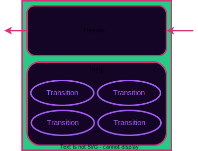
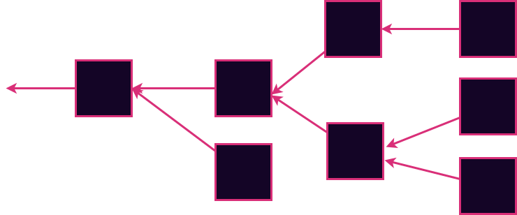
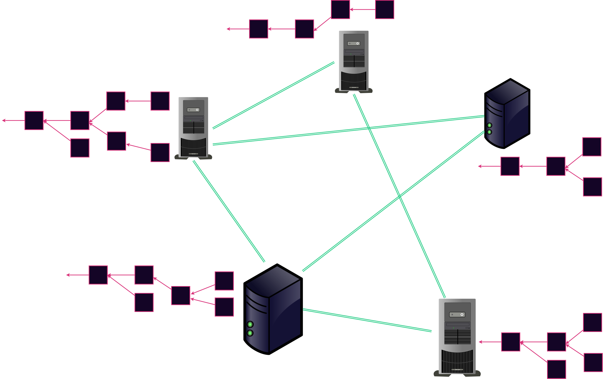
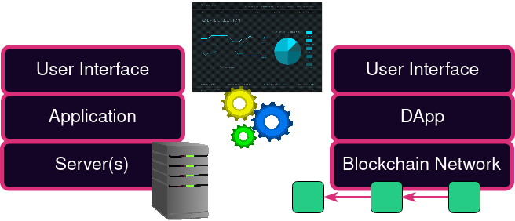

<!DOCTYPE html>
<html lang="en">

<head>
  <meta charset="utf-8" />
  <meta name="viewport" content="width=device-width, initial-scale=1.0, maximum-scale=1.0, user-scalable=no" />

  <title>Blockchain Structure</title>
  <link rel="icon" href="./../../assets/favicon.svg" />
  <link rel="shortcut icon" href="./../../assets/favicon.png" />
  <link rel="stylesheet" href="./../../dist/reset.css" />
  <link rel="stylesheet" href="./../../dist/reveal.css" />
  <link rel="stylesheet" href="./../.././assets/styles/PBA-theme.css" id="theme" />
  <link rel="stylesheet" href="./../../css/highlight/shades-of-purple.css" />

  <link rel="stylesheet" href="./../.././assets/styles/custom-classes.css" />

</head>

<body class="site">
  <header class="site-header">
    <!-- This logo is a link only on the watching server, not the production build -->
    <a href="">
      
    </a>
  </header>
  <main class="reveal">
    <article class="slides">
      <section  data-markdown><script type="text/template">

# Blockchain Structure


</script></section><section  data-markdown><script type="text/template">
## Shared Story

A Blockchain **cryptographically guarantees** that a history of events has not been tampered with.
This allows interested parties to have a **shared history**.

<aside class="notes"><p>And it allows them to know whether they have identical histories in O(1) by just comparing the tip of the chain.</p>
</aside></script></section><section ><section data-markdown><script type="text/template">
## Hash Linked List


<aside class="notes"><p>This is a simplified blockchain. Each block has a pointer to the parent block as well as a payload.</p>
</aside></script></section><section data-markdown><script type="text/template">
## Hash Linked List


<aside class="notes"><p>The pointer is a cryptographic hash of the parent block.</p>
</aside></script></section><section data-markdown><script type="text/template">
## Hash Linked List


<aside class="notes"><p>This ensures data integrity throughout the entire history of the chain. This is the simplest form that a blockchain could take and indeed it allows us to agree on a shared history.</p>
</aside></script></section><section data-markdown><script type="text/template">
### Genesis Block


<aside class="notes"><p>The first block in the chain is typically called a the &quot;Genesis block&quot; named after the first book in the judaeo-christian mythology - The beginning of our shared story. The parent hash is chosen to be some specific value. Typically we use the all-zero hash, although any fixed widely agreed-upon value would also do.</p>
</aside></script></section></section><section ><section data-markdown><script type="text/template">
## State Machines (Again)

A state machine defines:

<pba-flex center>

- Set of valid states
- Rules for transitioning between states

</pba-flex>


<!-- FIXME - do you want to use shared img assets? Breaks the module specific intention of folders per mod... @joshy -Nuke
Let's see how the hybrid contracts/blockchain thing goes first; then sort this. -Joshy
-->
</script></section><section data-markdown><script type="text/template">
### Blockchain meet State Machine


<aside class="notes"><p>The simplest way to join a blockchain to a state machine is to to make the blockchain&#39;s payload a state machine transition.
By doing so, we effectively track the history of a state machine in a cryptographically guaranteed way.</p>
</aside></script></section><section data-markdown><script type="text/template">
### Where do the States Live?

Somewhere else!


<aside class="notes"><p>There is a state associated with each block. But typically the state is NOT stored in the block. This state information is redundant because it can always be obtained by just re-executing the history of the transitions.
It is possible to store the state in the blocks, but the redundancy is undesirable. It wastes disk space for anyone who wants to store the history of the chain. Storing the state in the block is not done by any moderately popular blockchain today.
If you <em>want</em> to store the states, you are welcome to do so. Software that does this is known as an Archive node or an indexer. But it is stored separately from the block
...Pause...
One more time to make sure it sinks in: The state is NOT in the block.</p>
</aside></script></section><section data-markdown><script type="text/template">
### State Roots

A cryptographic anchor to the state


<aside class="notes"><p>Some data redundancy can be good to help avoid corruption etc. It is common for a block to contain a cryptographic fingerprint of
the state. This is known as a state root. You think of it as a hash of the state. In practice, the state is typically built into a Merkle tree like structure and the tree root is included. Not all blockchains do this. Notably bitcoin doesn&#39;t. But most do. We&#39;ll go into details about exactly how this state root is calculated for Substrate in the next two modules, but for now we just consider the state root to be some kind of cryptographic fingerprint.</p>
</aside></script></section></section><section ><section data-markdown><script type="text/template">
## Forks


A state machine can have different possible histories. These are called forks.

<aside class="notes"><p>You can think of them like alternate realities. We need to decide which of the many possible forks is ultimately the &quot;real&quot; one. This is the core job of consensus and we will talk about it in two upcoming lessons in this module.</p>
</aside></script></section><section data-markdown><script type="text/template">
## Invalid Transitions


<aside class="notes"><p>Before we even get to hardcore consensus, we can rule out <em>some</em> possibilities based on the state machine itself</p>
</aside></script></section></section><section ><section data-markdown><script type="text/template">
## Realistic Blockchain Structure



- Header: Summary of minimal important information about this block
- Body: A batched list of state transitions

<aside class="notes"><p>The header is a minimal amount of information. In some ways it is like metadata.
The body contains the real &quot;payload&quot;. It is almost always a batch of state transitions.
There are many name aliases for what is included in the body:</p>
<ul>
<li>Transitions</li>
<li>Transactions</li>
<li>Extrinsics</li>
</ul>
</aside></script></section><section data-markdown><script type="text/template">
## Blocks in Substrate

```rust
/// Abstraction over a Substrate block.
pub struct Block<Header, Extrinsic: MaybeSerialize> {
	/// The block header.
	pub header: Header,
	/// The accompanying extrinsics.
	pub extrinsics: Vec<Extrinsic>,
}
```

<aside class="notes"><p>This example is from Substrate and as such it strives to be a general and flexible format, we will cover Substrate in more depth in the next module. This is representative of nearly all real-world blockchains</p>
</aside></script></section></section><section ><section data-markdown><script type="text/template">
## Headers

Exact content varies per blockchain.
Always contains the parent hash.
Headers are the _actual_ hash-linked list, not entire blocks.

<aside class="notes"><p>The parent hash links blocks together (cryptographically linked list). The other info is handy for other infrastructure and applications (more on that later).</p>
</aside></script></section><section data-markdown><script type="text/template">
## Header Examples

<pba-cols>
<pba-col>

<pba-flex center>

**Bitcoin**

</pba-flex>

- Previous Hash
- Time
- Version
- Tx Merkle Root
- N_Bits
- Nonce

</pba-col>
<pba-col>

<pba-flex center>

**Ethereum (PoW)**

</pba-flex>

- Parent Hash
- Time
- Block Number
- Transactions root
- State Root
- Difficulty
- Nonce
- ... even more

</pba-col>
</pba-cols>
</script></section><section data-markdown><script type="text/template">
## Substrate Header

- Parent hash
- Block Number (aka height)
- State root
- Extrinsics root
- Consensus Digest

<aside class="notes"><p>Extrinsics root is a crypto link to the body of the block. It is very similar to the state root.
Consensus Digest is information necessary for the consensus algorithm to determine a block&#39;s validity. It varies widely with the consensus algorithm used and we will discuss it in two upcoming lectures.</p>
</aside></script></section><section data-markdown><script type="text/template">
## Substrate Header (Full Picture)


</script></section></section><section  data-markdown><script type="text/template">
## Extrinsics

Packets from the outside world with _zero_ or more signatures attached.

- Function calls to the STF
- Some functions require signatures (e.g., transfer some tokens)
- Others don't, but usually have some validation means
</script></section><section ><section data-markdown><script type="text/template">
## DAGS

**Directed Acyclic Graphs**



<aside class="notes"><p>In math there is a notion of a Directed Acyclic Graph.
Define graph, than directed, than acyclic.
Blockchains are examples of DAGs.
Actually blockchains are a specific kind of a DAG called a tree.
Sometimes you will hear me talk about the &quot;block tree&quot; which really means all the histories of the chain.</p>
<p>But there are more kinds of DAGs than just trees.
Consider if someone authored a block that looks like this.</p>
<p>CLICK</p>
</aside></script></section><section data-markdown><script type="text/template">
## DAGS

**Directed Acyclic Graphs**


<aside class="notes"><p>What if a block could have more than one parent!?
It could allow parallelization and increased throughput!
But it also leads to problems.
What if there are conflicting transactions in the two parent histories?
How do you even know if there are conflicting histories?</p>
</aside></script></section></section><section ><section data-markdown><script type="text/template">
<!-- FIXME

This might be a good place to split the lesson.
The part before this is about a data structure.
The part after this is about a P2P network of nodes that track this data structure.
-->

## Blockchain 💒 P2P Networks



<aside class="notes"><p>So hopefully some parts of this figure look familiar.
What do you see here?</p>
<ul>
<li>Diverse servers.</li>
<li>In a p2p network.</li>
<li>Each with their own view of the blockchain.</li>
</ul>
</aside></script></section><section data-markdown><script type="text/template">
## Nodes

Software agents that participate in blockchain network.<br/>
May perform these jobs:

<pba-cols>
<pba-col>
<pba-flex center>

- Gossip blocks
- Execute and Validate blocks
- Store blocks
- Store states
- Gossip transactions

</pba-flex>
</pba-col>
<pba-col>
<pba-flex center>

- Maintain a transaction pool
- Author blocks
- Store block headers
- Answer user requests for data (RPC)

</pba-flex>
</pba-col>
</pba-cols>
<aside class="notes"><p>Many nodes only perform a subset of these tasks</p>
</aside></script></section><section data-markdown><script type="text/template">
## Types of Nodes

<pba-flex center>

- Full Nodes
- Light Nodes (aka Light clients)
- Authoring nodes
- Archive nodes
- RPC nodes

</pba-flex>
</script></section></section><section ><section data-markdown><script type="text/template">
## Blockspace

A resource created, and often sold, by a decentralized blockchain network.



#### Learn more:

- Article: https://a16zcrypto.com/blockspace-explained/
- Article: https://www.rob.tech/polkadot-blockspace-over-blockchains/
- Podcast: https://youtu.be/jezH_7qEk50?t=5330

<aside class="notes"><p>A Blockchain network is a replacement for a centralized server.
It sells a product to application deployers.
The state machine is the application layer, and the blockchain is the server replacement.
In the same way that applications pay data centers for server resources like cpu time, disk space, bandwidth etc.
Applications (maybe via their developers or users) pay for the privilege of having their history attested to and their state tracked by a trustless unstoppable consensus layer.</p>
</aside></script></section><section data-markdown><script type="text/template">
## Transaction Pool

- Contains transactions that are not yet in blocks.
- Constantly prioritizing and re-prioritizing transactions.
- Operates as a blockspace market.

<aside class="notes"><p>Sometimes known as mempool (thanks bitcoin 🙄)
Authoring nodes determine the order of upcoming transactions. In some sense they can see the future.</p>
<p>Foreshadow forks where players disagree on the rules
History: dao fork bch fork
foreshadow consensus: arbitrary additional constraints for a block to be valid</p>
</aside></script></section></section><section  data-markdown><script type="text/template">
# Let's #BUIDL It
</script></section>
    </article>
  </main>

  <script src="./../../dist/reveal.js"></script>

  <script src="./../../plugin/markdown/markdown.js"></script>
  <script src="./../../plugin/highlight/highlight.js"></script>
  <script src="./../../plugin/zoom/zoom.js"></script>
  <script src="./../../plugin/notes/notes.js"></script>
  <script src="./../../plugin/math/math.js"></script>

  <script src="./../../assets/plugin/mermaid.js"></script>
  <script src="./../../assets/plugin/mermaid-theme.js"></script>

  <script src="./../../assets/plugin/chart/chart.js"></script>
  <script src="./../../assets/plugin/chart/chart.min.js"></script>

  <script src="./../../assets/plugin/tailwindcss.min.js"></script>

  <script>
    function extend() {
      var target = {};
      for (var i = 0; i < arguments.length; i++) {
        var source = arguments[i];
        for (var key in source) {
          if (source.hasOwnProperty(key)) {
            target[key] = source[key];
          }
        }
      }
      return target;
    }

    // default options to init reveal.js
    var defaultOptions = {
      controls: true,
      progress: true,
      history: true,
      center: true,
      transition: 'default', // none/fade/slide/convex/concave/zoom
      slideNumber: true,
      mermaid: {
        startOnLoad: false,
        logLevel: 3,
        theme: 'base',
        themeVariables: {
          primaryColor: purple,
          primaryTextColor: white,
          primaryBorderColor: pink,
          lineColor: pink,
          secondaryColor: lightPurple,
          tertiaryColor: lightPurple,
        },
      },
      chart: {
        defaults: {
          color: 'lightgray', // color of labels
          scale: {
            beginAtZero: true,
            ticks: { stepSize: 1 },
            grid: { color: "lightgray" }, // color of grid lines
          },
        },
        line: { borderColor: ["#ccc", "#E6007A", "#6D3AEE"], "borderDash": [[5, 10], [0, 0]] },
        bar: { backgroundColor: ["#ccc", "#E6007A", "#6D3AEE"] },
      },
      plugins: [
        RevealMarkdown,
        RevealHighlight,
        RevealZoom,
        RevealNotes,
        RevealMath,
        RevealMermaid,
        RevealChart
      ]
    };

    // options from URL query string
    var queryOptions = Reveal().getQueryHash() || {};

    var options = extend(defaultOptions, {"width":1400,"height":900,"margin":0,"minScale":0.2,"maxScale":2,"transition":"none","controls":true,"progress":true,"center":true,"slideNumber":true,"backgroundTransition":"fade"}, queryOptions);
  </script>


  <script>
    Reveal.initialize(options);
  </script>
</body>

</html>
